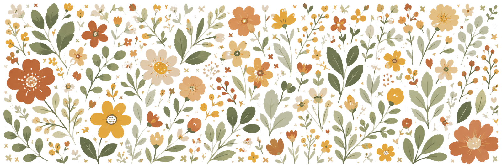
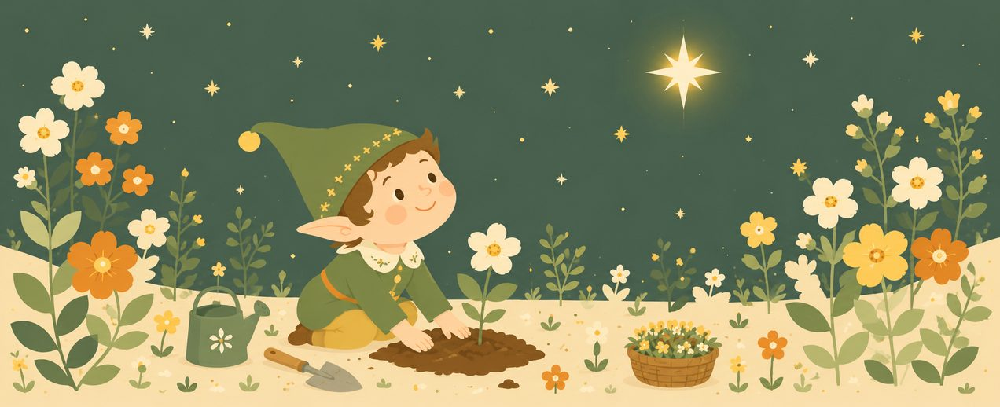
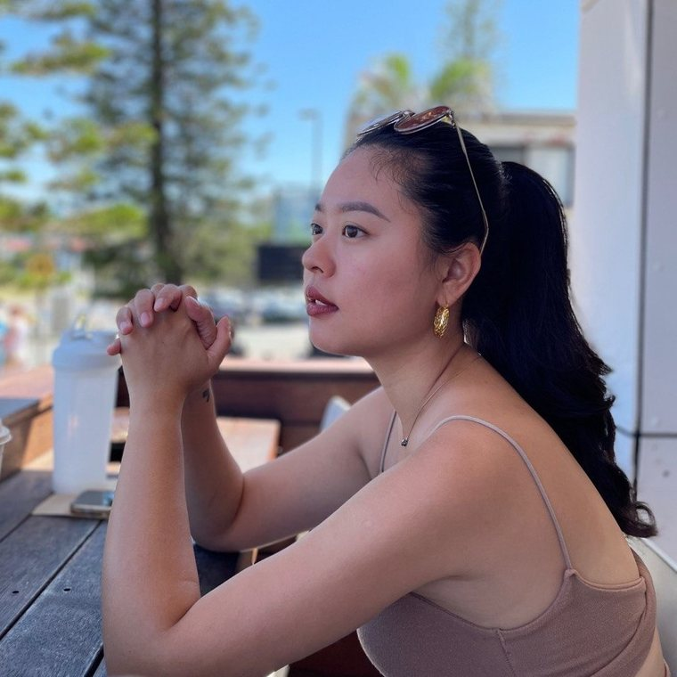
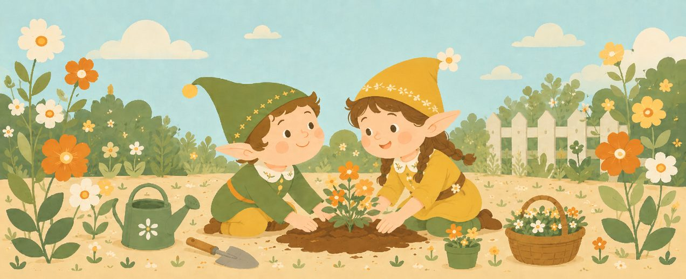
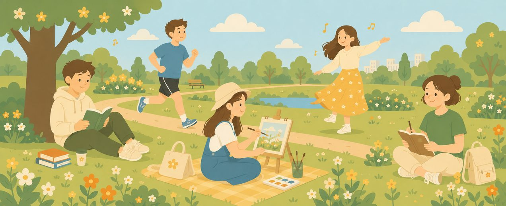
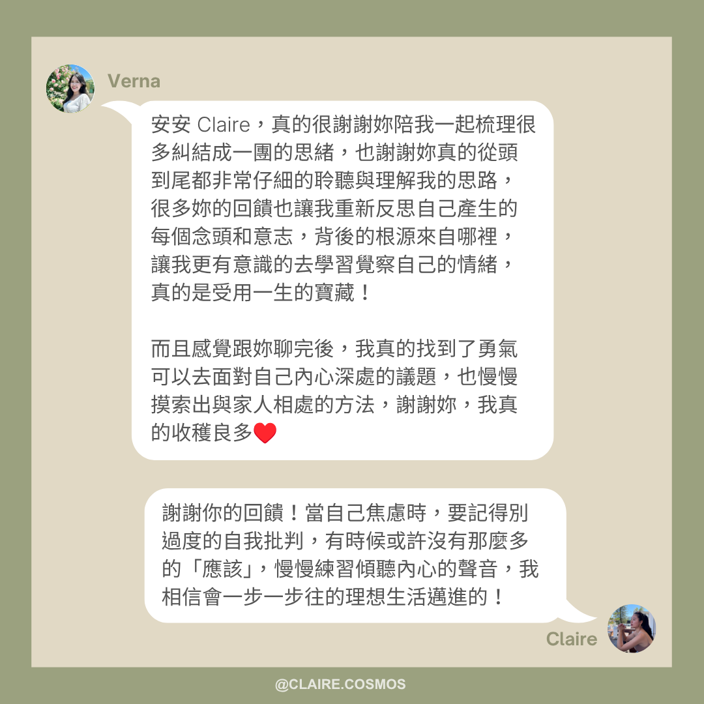
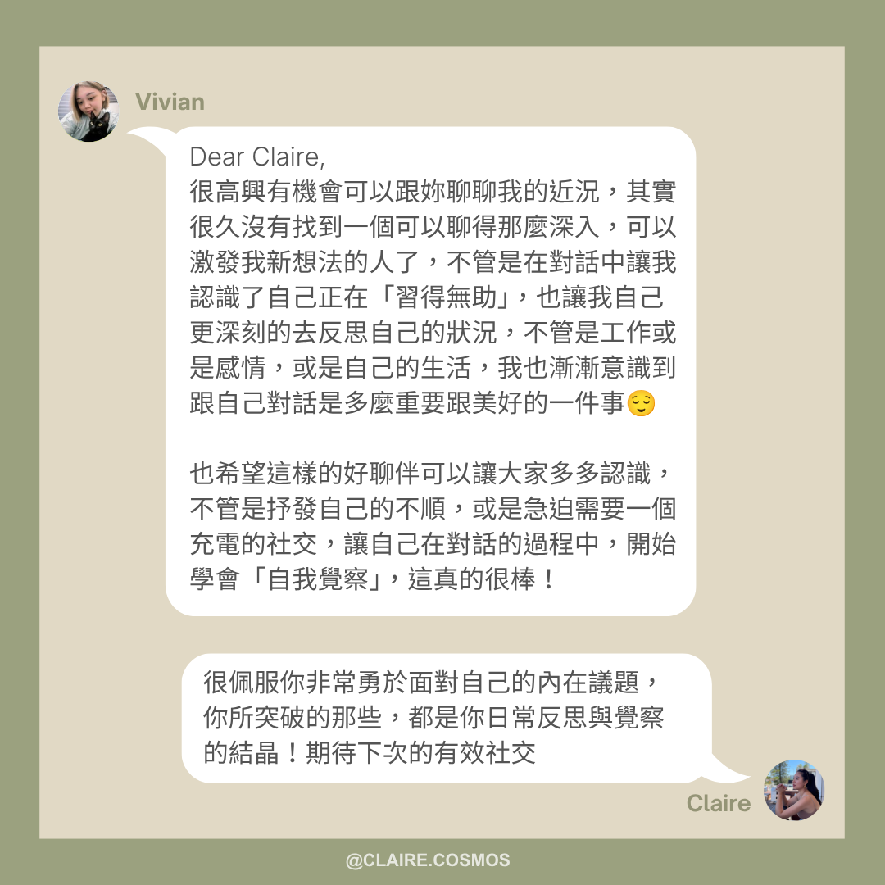
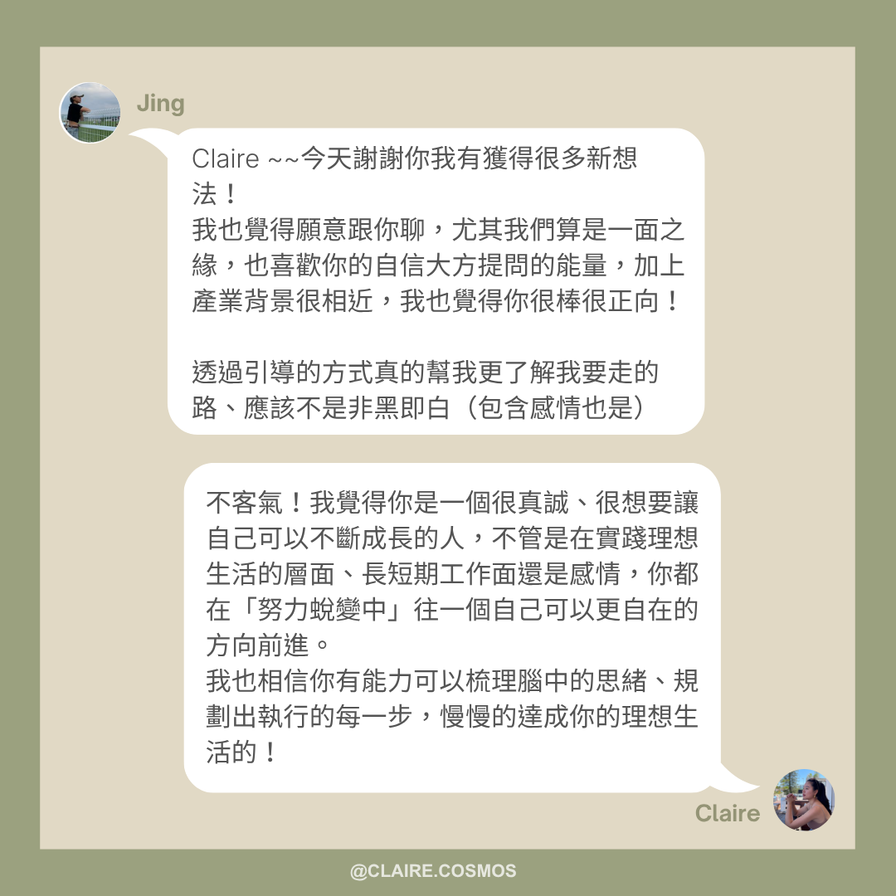
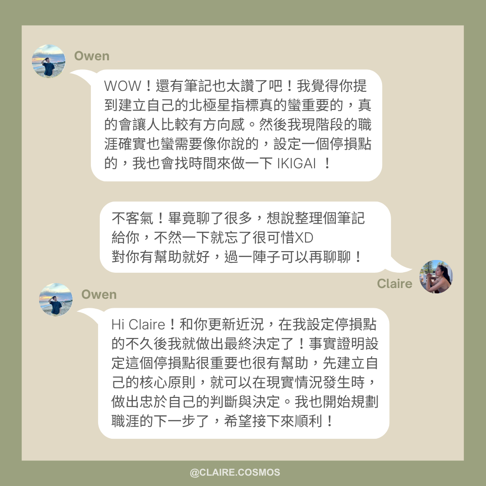
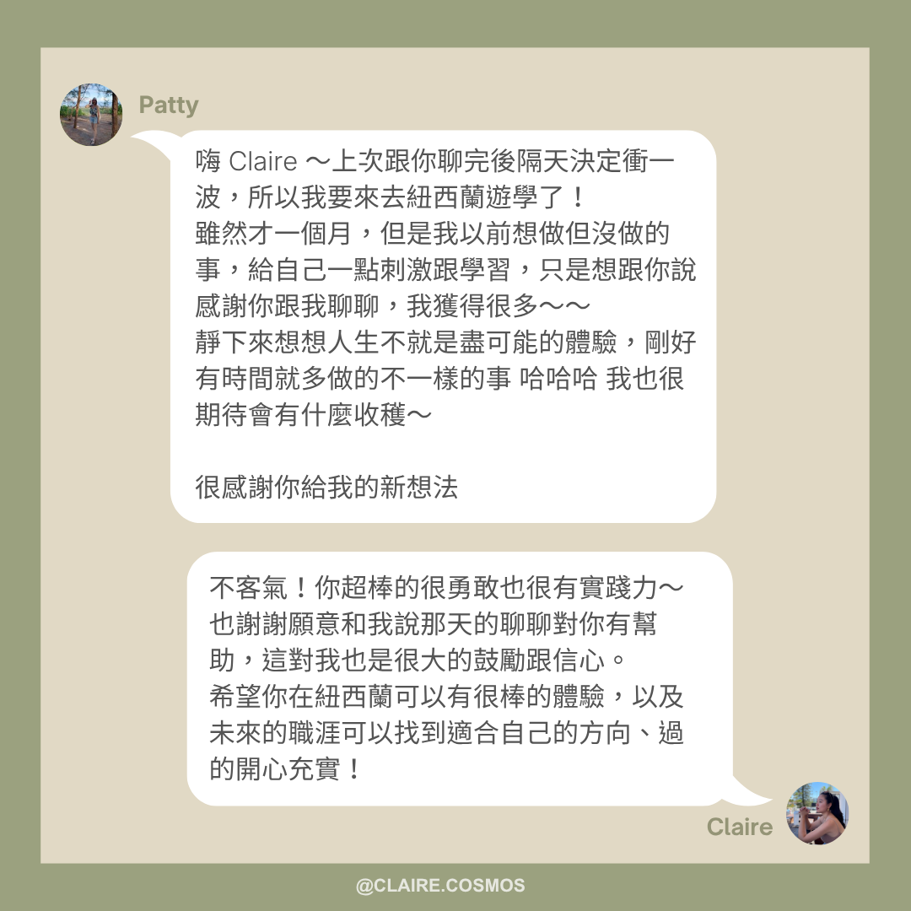

陪你為心裡的花園鬆土、澆水，在恢復裡，練習覺察；
在覺察裡，長出屬於你的行動。
每月一次，不只陪你回顧反思，更帶你對焦下一步。
用一對一教練式對談，創造，不只被工作定義的自己。
有一種人，對於工作似乎很能掌握要領，總能快速上手，很懂得「如何做事」。
這樣的人，在職場中很容易獲得同事的肯定、上司的賞識。你很努力、學得快、扛得住責任。出社會沒幾年，你可能已經拿到不錯的 title、收入，升遷的速度也比同齡人快一些。
但心裡也許藏著一種說不出口的不安：
你很會完成外在任務，卻不太確定，怎麼經營工作以外的生活：
但你其實心中有更大的期待：
你不是沒有方向的人。你只是工作以外的自己，還沒有機會，好好長出來。
我想和你説：你渴望的那些，不是奢求。
你有能力抵達自己想去的地方，成為自己想成為的人。你只是需要一個可以把工作以外的自己，好好地種下、慢慢養大的地方。
教練（Coach）是一門超過 30 年歷史的專業學科，早在 15 世紀的歐洲，就已經出現了「Coach」這個字詞，當時指的是一種載人的四輪馬車，延伸出「帶領他人由現狀到達目的地」的意思。
1990 年代起，教練逐漸成為一門完整的專業學科，國際上成立了許多專業機構，如 ICF（國際教練聯合會），是全球最大、最具公信力的教練組織，制定嚴謹的倫理規範與能力標準，並提供國際認證。
什麼是教練？- ICF 官方影片
ICF 認證教練訓練證書
| 專業/職業 | 著重點 | 典型情境 | 核心特點 |
|---|---|---|---|
| 教練 | 聚焦當下與未來、突破與成長 | 壓力調節、內耗卡點、自我覺察 | 以提問引導覺察為主，偶爾在必要時，也會分享觀察與建議 |
| 諮商 | 處理過往經驗、心理困擾 | 過去創傷、心理健康議題 | 大多聚焦「過去」，協助修復與療癒 |
| 顧問 | 提供專業解決方案 | 特定專業領域的問題 | 大多直接「給答案」，輸出解方 |
有一個人固定陪你回顧上個月、一起訂出下個月的方向：陪你反思、覺察、設定目標，並設計具體的行動。
每一次都會依你當下的狀態，圍繞三個方向展開：辨認身心負荷，練習恢復；看見卡住背後在保護的擔憂，慢慢鬆開；把模糊的想法，梳理成具體方向。
對談中這三個方向的比重，會依據你的狀態動態調整。且每一次你都會帶走一個自己想出來、可以執行的行動，讓你確實感受到，自己正在一點一點往前走。
理解自己，不是為了想更多，而是為了更有能力打理自己的生活。
很多人很會工作、很會完成任務、很會達成外部標準，但這些能力不一定會自動延伸到生活的其他面向。工作可以是生活裡很重要的一部分，但它不該是唯一支撐價值感、意義感與身份認同的地方。
行動力不是靠逼自己變得更努力，而是來自於更清楚地理解自己：就像在夜裡航行，真正重要的不是划得多用力，而是有沒有找到那顆屬於自己的北極星。
我把這種能力稱為個人內在導航系統：知道自己現在在哪裡、真正重視什麼、哪些地方只是憑慣性在划，以及下一步可以怎麼用低風險的方式，重新校準方向。
但找到方向，只是這套系統的一半。另一半，發生在你腳下的土地裡。

生活裡那些一閃而過的念頭、好奇、不上不下的情緒，都像一顆顆被你隨手撿起、種進土裡的種子。你不會知道哪一顆會發芽，哪一顆會枯萎，哪一顆，說不定就是那顆能一路往上長、通往你北極星的魔豆。
但你不需要提前猜對哪一顆才是。每一顆，都值得給它一個機會，種種看、玩玩看，不帶壓力地試一次。大不了，每一顆都長出來了，它們可能都不算太大，但你會擁有的，是一座屬於自己的「漂亮的花園」。
它不是替你指出唯一正確的座標，也不是要你立刻轉向。而是幫助你，一邊看著星圖確認方向，一邊也顧好腳下那片土，把模糊的感受、渴望、卡住與想法，慢慢照顧成看得見的樣子。
當你越能讀懂這張星圖、也越懂得怎麼照顧這片土，就越能在工作、生活、關係、身體、創作與個人探索之間，找到屬於自己的航線與花園。
我的方法，不是憑感覺聊天，而是整合了幾個專業視角：
教練的預設，不是替你做決定，而是透過提問與傾聽，陪你自己找到答案。這聽起來或許比「直接告訴你該怎麼做」更慢，但這個答案是你自己長出來的，會更貼近真實的你，也更持久，不會你一離開對話，就不知道該怎麼繼續下去。
但如果我觀察到一些什麼、或你主動想聽聽我的想法，我也會分享，只是會先說明：這時候的我不是以教練的姿態給你我的觀點，無論如何，決定權還是在你手上。
卡住你的，往往不只是想法，而是身體長期處在某種壓力狀態下的反應；而讓你願意行動的，也不只是意志力，還有身心整體的能量狀態。學會辨認這些訊號，不只是為了修復，更是為了找回一種不逼迫自己、也能自然而然想往前走的動力。
不從「哪裡有問題」出發，而是從「你已經擁有的資源與優勢」出發，找到屬於你的成長路徑。每個人身上都有與生俱來、特別擅長的特質，只是未必被自己看見。辨認這些優勢，往往比一直補足缺點，更能帶你靠近一個有活力的生活狀態。
覺察你如何用語言、用思維模式，建構了自己看世界的方式，進而練習更貼近自己的表達與行動。很多卡住我們的，不是事情本身，而是我們描述這件事情的方式，久而久之，走成了一條大腦最熟悉的路。要調整它，光靠「想通」不夠，還需要透過行動，一次次走出新的路徑。
除了對話本身，我也會依照你的狀態，帶入一些我自己設計的評估表、練習模板與思考框架，讓覺察不只停留在感受層面，而是有具體的輔助工具，讓你更有效率地看清楚自己。
這些方法不是分開使用的工具，而是陪你慢慢建立自己的個人內在導航系統，在卡住的時候，找到屬於自己的方向。

我是 Claire，曾任軟體業 PM，26 歲那年，就被交付了一個公司的重大專案，完全沒有 PM 背景與經驗的我，為了職涯發展，就這樣自告奮勇地站上了第一線。
那時候的我，每天都活在一種說不出口的緊繃裡：怕被拆穿其實我沒那麼懂，怕自己的不確定被人看穿，只能一邊靠直覺硬撐，一邊拚命確保表面上一切都在掌控之中。這其實就是很典型的冒牌者症候群——你越是被賦予重任，心裡越是害怕，有一天大家會發現「其實我也不知道自己在幹嘛」。
「盡力做到最好」是我從小被教會的價值觀。只是那時候的我，一直搞不清楚「盡力」的定義，我總覺得，只有把自己逼到精疲力竭，才算對得起自己。所以我很擅長用力，卻不擅長停下來。
直到有天，同事隨口問我「假日都在幹嘛」，我發現自己答不出來。我開始意識到，除了工作，我好像沒有任何一件事，是我真心花時間投入、累積的。
更讓我害怕的是，我發現自己漸漸不敢做夢了，那個曾經很敢想像理想生活的自己，好像已經很久沒有出現過。
我很清楚自己理想中的生活長什麼樣子，卻感覺不到自己正在往那裡前進。這種落差，讓我陷入一種很深的習得性無助，我開始懷疑，自己是不是根本沒有能力，帶自己去過那種理想的生活。
後來，我 burnout 了，選擇裸辭。
我不後悔這個決定。那段路，讓我開始練習感受「我對什麼有反應」，也讓我重新拾回敢做夢的能力。
我有一份自己維持至今的紀錄，叫做 Decision Log（決策足跡）——每一次重大的決定、每一次想法上的突破，我都會寫下來，讓自己未來可以回頭看見，自己是怎麼一步步走到這裡的。
我的 Decision Log 筆記
從那段練習開始，我一步一步走上了教練這條路，並在澳洲完成了 ICF 專業教練訓練。也是在那段路上，我才發現，教練這套信念體系，跟我自己一直以來相信的世界觀，重疊度高得驚人：相信每個人都有屬於自己的路，相信每個人都擁有內在的資源與力量，也相信行動本身，就能帶來改變。
更多時候，真正需要學習的，是怎麼在人生的各個面向之間，找到屬於自己的平衡：壓力的調適、職涯上的追求、工作以外的自己與生活、心理的狀態、關係的經營。
這些事情，本來就不是年輕時的我們，天生就懂得怎麼兼顧的。在對自己、對世界都還不夠認識的階段，卻要一次面對這麼多困難的決策與學習，真的很不容易。
我想做的，就是陪你，讓這條路走得，稍微不那麼辛苦一點。
你有沒有想過，為什麼健身教練總會問你「平常都吃什麼」？身體是很誠實的，吃進去什麼，就長成什麼樣子。心力也是一樣——你把注意力放在哪裡，哪邊就會有所累積。若是把大部分心力都放進了工作裡，工作這一塊就會長得特別茂盛。
而工作以外的自己呢？也許只是還沒被澆過水，不代表它長不出來。你其實一直都在澆水的：看的那些書、上的那些課，都是你想讓自己更完整的嘗試。
只是有些土壤比較難自己鬆開，尤其是關於「認識自己」這件事，光靠自己讀、自己想，常常會卡在同一個地方繞。
找一個人陪你一起鬆土，不是因為你種得不好，只是有些地方，兩雙手合作會比一個人快一點。
好的土壤，從來不會挑剔你種下的種子。你想到什麼、感覺到什麼，都可以直接放進來，不用先修剪成「聽起來夠成熟」的樣子。不同的植物需要不同的照顧方式：明明是耐旱的仙人掌，卻天天澆水，或明明需要陽光，卻放在陰影裡，再用心也長不好。我會陪你先認出自己的土質，用真正適合你的方式，去記錄、去照顧。
這片土地，一直是你在照顧、你在決定要種什麼、要往哪個方向長。我比較像是在你身邊，幫你注意周遭環境，提醒你可能太靠近了，反而看不清楚哪裡土壤乾了、哪裡雜草悄悄長出來了。
身在花園裡的人，往往最難看見自己花園的全貌。自己摸索，可能要繞很多路才找得到問題出在哪。有一個人陪你一起，或許能走得快一些、輕鬆一點。

辨認你現在的身心負荷狀態，練習找到適合自己的恢復方式，而不是忽略、硬撐。
有時候，你會發現自己明明想做一件事，卻遲遲動不了。這種卡住，有時候來自於一種不自覺的「限制性信念」，一個你可能從沒意識到、卻默默影響著你的想法。它很少是無緣無故出現的，通常是在保護你某個更深層的擔憂。我們會一起把它認出來，再慢慢鬆開它。
當你已經準備好往前，我們會一起把模糊的想望，梳理成具體的方向。
每一次的對談，都會根據你的需求與狀態，以上三點為核心進行客製化配比。每一次對談結束時，你都會帶走一個自己想出來的、可以執行的行動，讓你確實感受到，自己正在一點一點往前走。
一次 60 分鐘的對話，讓我們認識彼此、了解你目前的狀態與需求。你可以自由地在首談後決定，是否要展開正式合作。過程中，我會帶你實際體驗一次 mini coaching，感受這個系統怎麼運作，也會留時間回答你的疑問。
為期 3 個月，每月一次 1.5 小時，共 3 次。
完成首談後，若確認展開正式合作，首談的 NT$800 會從正式方案的費用中扣除。也就是 NT$5,999 - NT$800 = NT$5,199 即可開啟「三個月的正式方案」。
根據腦科學研究，持續且規律的練習，大約需要 4-6 週，才能開始出現可觀察到的變化；若能維持 8-12 週的規律練習，這些改變會更穩固。
這也是為什麼，每一次對談結束時，你都會帶走一個具體的行動，不管那次聊的比重落在修復、鬆綁，或是方向上，這個行動的功能，就是讓改變有機會被真正「走出來」，而不只是停留在想清楚的階段。每個月一次，剛好是讓你有時間，把這個行動真正走過一遍、留下一點痕跡，再回來看下一步。
這就是為什麼，這個服務的節奏設計成每月一次、至少 3 個月，不是一次性的深聊，而是讓改變有時間，真正在生活裡扎根。
史丹佛大學曾訪問兩百多位企業執行長與高階主管，發現找教練這件事，多半不是被誰要求的：高達 78% 的執行長，是自己主動提出想要找教練的。而幾乎所有受訪的執行長，都表示自己很享受被教練陪伴、被引導思考的過程。
根據 ICF（國際教練聯合會）的調查，接受過教練陪伴的人裡，八成表示自尊與自信因此提升，超過七成表示人際關係、溝通、工作表現與生活平衡，都因此變得更好。
你或許也羨慕過那樣的人。工作能力很強，判斷成熟，狀態穩定，讓人信任，但你真正欣賞的，可能不只是他們的能力與工作表現。
你羨慕的是：他們好像沒有被工作吃掉。他們明明也很忙，卻看起來有能力維持自己。他們有關係、有生活品質，甚至還有一個真心喜歡的興趣。他們不是只在公司裡發光，回到生活裡，也一樣完整地閃耀著。
原來優秀不一定要以犧牲生活為代價。原來一個人可以很有企圖心，也同時把自己照顧好。
你或許不知道，這樣的狀態，很多時候不是靠意志力硬撐出來的。就像頂尖的運動員，不會只靠一位教練練體能、練技術，身邊往往還有一位專屬的心態教練，陪他們在賽場之外，把狀態整理好。越是站在高處的人，越懂得這件事：光靠意志力衝刺，撐不了太久，真正走得久的人，身邊都留了一個陪他們看路的人。
你想靠近的，也許不是複製他們的人生，而是那種 well-maintained 的狀態，工作有成果，但身心沒有被耗盡；離開工作場域之後，也還有能讓自己穩住、恢復、感覺活著的東西。
而這樣的狀態，很少是一次頓悟得來的。更像是那些每天為土地澆一點水、定期看看天象的人，他們的花園，是一次次微小的照顧，慢慢養出來的，不是某天突然決定「我要開始好好生活」，就自動長成的。

這也是為什麼，每個月留一段時間，回到自己身上，看看這陣子哪裡乾了、哪裡需要鬆土、哪個方向的陽光被忽略了，會是這整片花園，能持續被照顧下去的原因。不是一次性的澆灌，而是一個你可以持續倚靠的節奏。
這正是這個服務想陪你走向的地方：不只是把工作做好，也能自我調適壓力、更認識自己真正的需求。你會開始擁有一件純粹為了自己而做的事，一個工作以外的生活支點，甚至是新的身份認同與價值感來源。
你不需要現在決定辭職，不一定得人生大轉彎，就能成為一個工作與生活，都被好好照顧著的人。





完全可以。即使只是覺得「卡住」或「混亂」，沒有清楚的問題，對話本身也能幫助你慢慢釐清。
很多人一開始覺得自己沒什麼可說，但在過程中往往會找到真正重要的議題。
完全不用擔心。對話不是考試，你不需要有「完美答案」。我的角色是透過提問和引導，幫助你把模糊的想法逐步說清楚。
即使語無倫次，也是對話自然的一部分。
每個人的狀態不同，有些人會在第一次首談後就感受到清晰的變化。
根據腦科學研究，持續且規律的練習，大約需要 4-6 週才會開始出現可觀察到的改變，若能持續 8-12 週，這些改變會更穩固。這也是為什麼這個服務設計成每月一次、至少 3 個月，每次對談後帶走的具體行動，就是讓改變真正有機會被「走出來」，而不只是停留在想清楚的階段。
不論進度快慢，每一次對話都會有所收穫與推進。
若你正在經歷心理創傷、心理健康相關的困擾，或需要的是醫療、法律、財務方面的專業建議，教練對談無法取代這些專業協助，會建議優先尋求相關領域的合格專業人員。
教練的陪伴，適合建立在你已經相對穩定的基礎上，如果你想要的是，在忙碌的生活裡，有一個穩定的節奏，陪你辨認卡住的地方、恢復能量、慢慢長出工作以外的自己，這正是這個服務想做的事。
首談的費用為 NT$800，是一次 60 分鐘的對話，目的是讓你親身體驗一次教練式對話、實際感受這個系統怎麼運作。
要不要繼續正式服務，全由你決定。若確認展開正式合作，首談費用會從正式方案總價中扣除。
會的。不論是首談或正式合作，所有對話、表單、筆記都遵循教練倫理與保密原則，不會外流或被第三方得知。正式合作會另外簽訂合約，確保雙方的權益。若未來需要引用你的故事（例如社群貼文），我會事先徵求你的同意，並將資訊完全去識別化。
你可以放心，這是一個安全而私密的空間。
當然可以。你永遠有選擇權，只需要回答你願意分享的部分。教練對話不是強迫挖掘，而是尊重你、陪伴你在最舒服的節奏裡探索。
每月對談之間，我會提供 2 次訊息回報的額度，針對我們當月一起設計的行動，你可以簡短回報進度或卡點，我會在 24 小時內回覆。
這個額度是為了聚焦在當月的行動設計，不是即時聊天室；若有更即時或更頻繁討論的需求，會需要另外安排一次對談時間，費用另計。
若遇不可抗力因素需改期，首談提供 1 次的改期彈性，且需於 24 小時前提出；若在 24 小時內才提出改期，需收取首談費用的 50%，並依照當月剩餘名額，另約時間。若當月名額已滿，則會遞延至下一個可預約的月份，並保有該月的優先預約權。
正式方案期間，每一次對談的時間，都可以由任一方提出更改，最多可調整 2 次，並須於 24 小時前提出，我們會另外安排雙方都合適的時間，不會產生額外費用。若在預定時間前 24 小時內才提出改期，將需支付原定費用的 50%。
可以。在教練過程中，我主要透過提問與引導，幫助你自己找到答案。但如果你希望聽到我的觀點，我會誠實分享，把它當作一個「參考角度」。最終選擇權仍在你手裡。
這很常見。行動不是要「完美執行」，而是透過嘗試帶來新的覺察。即使沒有完成，我們也會一起回顧，調整步驟，找到更適合你的方式。
每一次的經驗，都是推進的一部分。